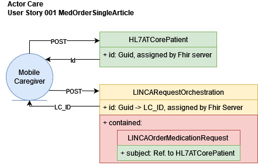
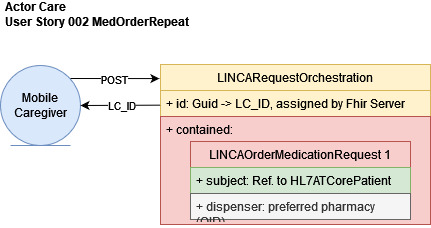

Linked Care Implementation Guide
1.1.0 - ci-build
Linked Care Implementation Guide
1.1.0 - ci-build
Linked Care Implementation Guide - Local Development build (v1.1.0). See the Directory of published versions
User Susanne Allzeit (DGKP) is an employee at the mobile caregiver organization Pflegedienst Immerdar, whose client, Renate Rüssel-Olifant, is not in the LINCA system yet. Hence, Susanne Allzeit creates a client record in the system. Now, it is possible to order prescriptions for Renate Rüssel-Olifant. As Susanne Allzeit will pick up the medication on the go, she places the order without specifying a pharmacy.” 
User Susanne Allzeit (DGKP) is an employee at the mobile caregiver organization Pflegedienst Immerdar, whose client, Renate Rüssel-Olifant, is already registered as patient in the LINCA system. Susanne Allzeit needs to re-stock prescription medication for Renate Rüssel-Olifant. Hence, she places an order on LINCA referring to the existing patient record of Renate Rüssel-Olifant. Additionally, she specifies her preferred pharmacy, Apotheke ‘Klappernder Storch’, in advance to collect the order there. “” 